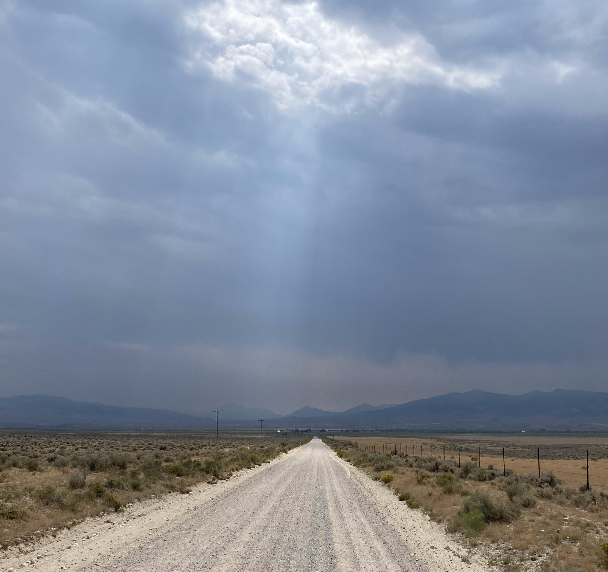
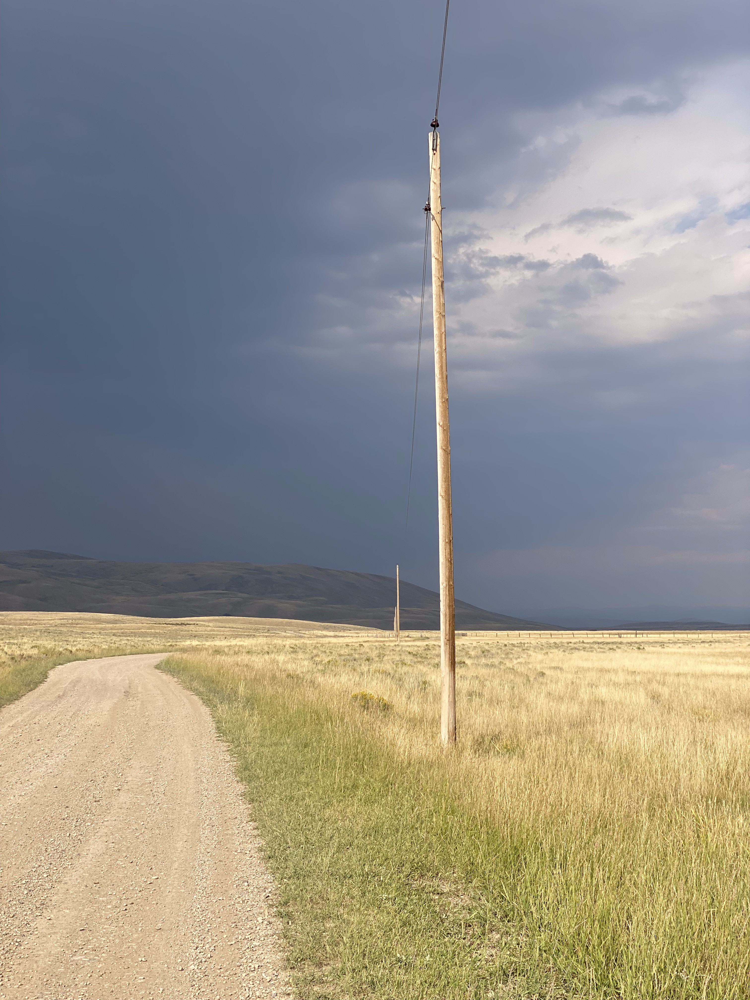
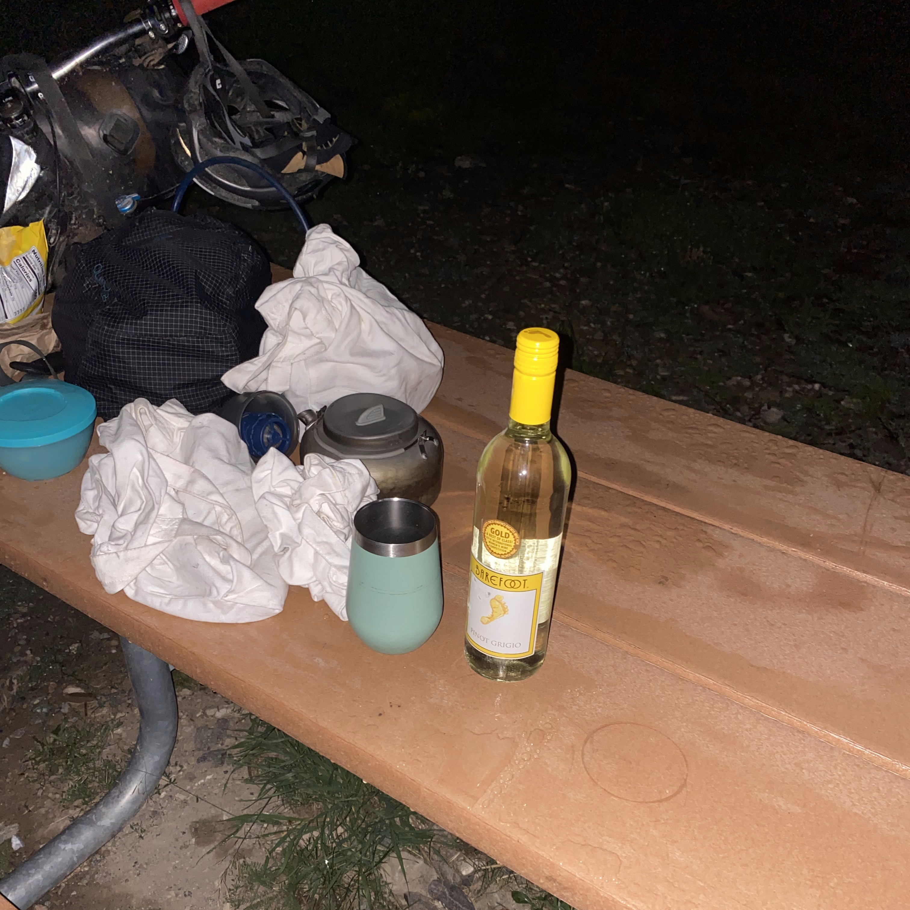
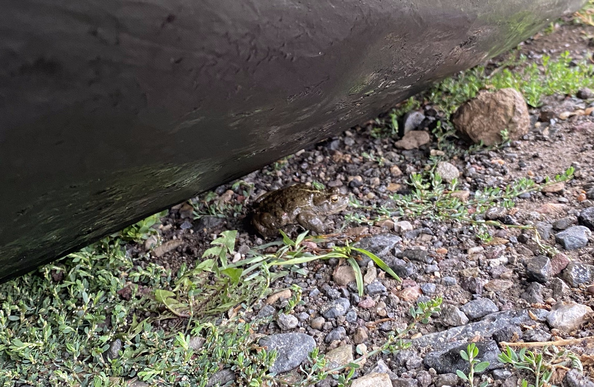
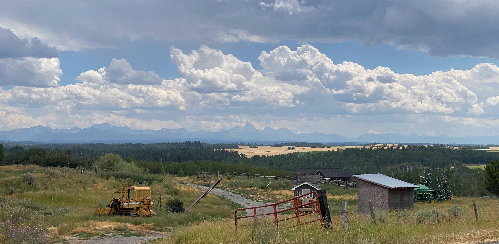
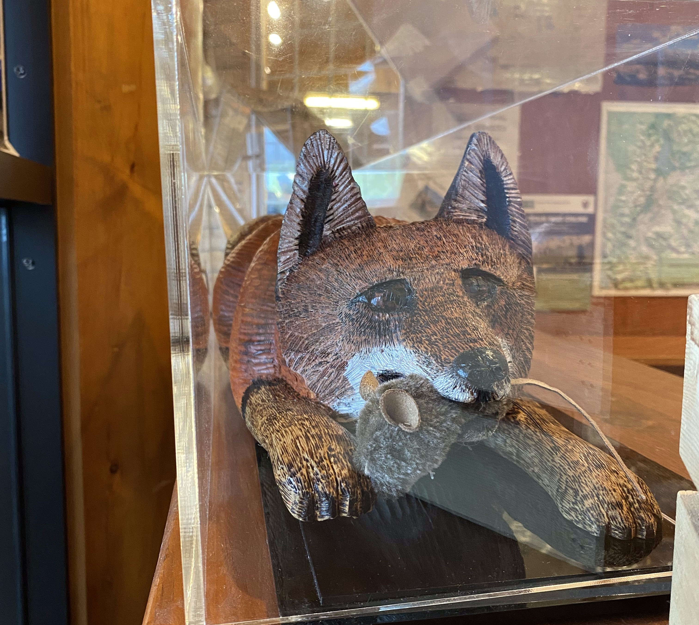

Section 3
Day 17, 18, 19


The pannier rack took longer to come in than I expected, so I sat around in Helena for a few days. The temperatures this week were pretty high so I didn't mind waiting out the weather. I've driven straight through Helena so many times, and this was the first time I spent more than 30 minutes in it, so I didn't mind the chance to get more familiar with the city. The downtown area was lively and filled with local restaurants and cafes that I could kill some time in. Every time I came back to the campsite, there was a new group of bikers. One group was taking a day off in Helena as well so I spent the day biking around town with them. Coincidentally, we were all engineers taking some time off of work. Like attracts like I guess? After some good chats over lunch, we exchanged contact info. Since we were going in the same direction, I told them I'd try to catch up after my pannier rack came in.
I met up with Yoann a few times at a cafe. He was waiting out the hot weather and putting together a video of his trip. He told me about his plans to bike all the way to Patagonia, on the southern tip of South America. He moved to Vancouver a few years back and took a job as a bike mechanic to save up for this trip, and put himself on a very strict budget to extend the time off as long as possible.
The pannier rack was taking longer to ship than I expected, so I ran out of days at the original campsite. I made an account on WarmShowers to find somewhere new to stay, and found a host in the middle of the city. Linda? check the name was quick to reply and offered a spot in her yard to set up my tent for the night. I got some groceries for dinner, and headed over to her house. Another biker, Eric, joined us for dinner. Linda seemed very happy to host us and told us plenty of stories of her 60 years of bike touring adventures. She's ridden the divide several times, and ran a mobile bike repair service out of her van to make money. It was so inspiring to hear her talk about her past. I could tell that she had a true passion for exploring the country and the experiences she got from bike touring. Linda was happy to hear stories from us, and gave us plenty of pointers for the upcoming section. After chatting, we set up our tents and went to sleep. Linda even camped outside with us.
Day 20
While Eric and I were packing up, Linda prepared some oats and blueberries for breakfast. While eating, I got an email letting me know that my pannier rack was delivered. Finally! I went straight to the post office and returned to Linda's to install it. She had all the tools I needed to install it. After making a few adjustments to the installation instructions and a bit of frustration, the rack was on. I installed the used panniers that I picked up in town the previous day, and I was treated with more luggage space than I could reasonably use. With the rack installed and eager to make some progress after sitting in Helena for so long, I said my farewells and hit the road. One of the laws of backpacking became evident before I even left town. What you need doesn't strictly depend on your needs. It depends on how much space you have in your bags. And since I had extra space, I "needed" a way to make coffee while camping. So I picked up a basic pour-over set and some ground coffee. Although these items weren't heavy, they were bulky, which prevented me from carrying them before I got myself set up with panniers.
A steep climb quickly took me out of Helena. After three days of rest, my legs were feeling a little sleepy on this first climb. I almost burned myself out in the first half but eventually fell into a steady rhythm going up the hill. I caught up with Yoann on the hill. We just happened to leave Helena on the same day! We spent the rest of the day biking together, reaching Park Lake and calling it a day there.
Day 21
Once again, I didn't do much research on the upcoming sections of the trail. We were approaching Lava Mountain, which is an infamous climb, and I was blissfully ignorant of what was coming. I was already quite used to going over steep roads, but the quality of the road was usually pretty good. The road on this climb was in very bad shape. The center of the trail was a rut two feet deep and two feet wide, and the sides of this rut were hardly rideable, being covered in chunky rocks and huge roots. This was one of several sections on the trail where I could see it being part of a downhill bike park. Except we were going uphill with bikes that had 50 pounds of gear hanging off of them. But we eventually made it to the top. Riding downhill presented it's own challenges to me with my new pannier setup. The bags I bought didn't have locking hooks, so occasionally if I went over a bump too quickly, the pannier would fall off the rack and be at risk of getting caught in the rear wheel. I tried everything I could to secure the bags better, but the only solution I could find was to ride more gently. So I started taking it very easy on the downhills. After taking it easy on the rest of the downhill, we reached a town called Basin and stopped for lunch in the one cafe in town. After some burgers and ice cream we were getting ready to continue on, when some heavy rain started. Luckily, there was a shelter right next to the cafe so we hid there to wait out the rain.
A dog that belonged to one of the other folks hiding from the rain was loving the company. After waiting for about 90 minutes, the rain died down and we started off again. The dog followed us a solid 8 km out of town, we weren't sure if it was ever going to turn back! There was an easy paved climb in the afternoon, and on the way down we found a reservoir with some flat spots to set up tents. As we were preparing dinner, we started getting rained on. The rain persisted while we ate, and I could imagine we looked absolutely miserable, with our hoods covering our hunched down heads. We were snapped out of our sulking as some lightning hit the hill on the other side of the water. The thunder came almost immediately after, and I could feel it as much as I could hear it. We were both looking up and around after that, and saw the clouds beginning to break in the distance. The setting sun hit the clouds and made for an amazing view, making up for the rain during dinner. We had a laugh about how the lightning was trying to catch our attention.
sunset picDay 22
After the rain, with the temperature going down and humidity going up, everything was getting soaked. I woke up in the middle of the night thinking that water got into the tent, but it was only condensation on my sleeping bag. Even though we stopped early to camp the previous day, we didn't want to leave until our gear dried off. So we waited until the sun was high enogh to do it's thing. In the meantime, I tried out my new coffee maker. It was nothing compared to Joann's grinder+moka pot combo, but it was better than nothing.
We had a relatively easy ride into Butte, a mining town with a downtown filled with old buildings.
I asked around at the bike shops about new hooks for my panniers, but I had no luck. Since I was applying for jobs before this trip, I had a phone interview set up for today so I waited around town until they called so that I would have good reception. After restocking, waiting, then absolutely butchering the interview, I continued on out of Butte. Since Yoann left while I was waiting for the interview, I was planning on catching up to him on the way out of town. Unfortunately I must have missed his campsite. I continued on down the next valley hoping to find him or at least a spot to set up my own camp. add valley pic
add fuel videoAfter reaching the bottom of the valley and crossing the interstate, the sun was almost completely down. There was a campsite marked on the map 10 km up the next climb, so I dug in and pushed for that. I made it to the campsite before I needed my headlamp, and was relieved to see one other group there. This site had lots of deadfall so I made myself a fire to stay warm as I made dinner in the dark.
Day 23
After the push from yesterday, I was well into the first climb of the day. It ended on the top of Fleecer Ridge, which has the steepest section on the entire trail. I had a full suspension bike so I decided to try to bike down it. The first section was simple enough, it was rocky but not terribly steep. The steep section was unmistakable though. I continued biking down but after maybe 15 seconds on the -29% grade, I started to smell my brakes burning up. Immediately after, I could feel the brakes slipping, so I steered myself into the bushes to slow myself down. Luckily, I managed to stay on my bike. I walked down the rest of the steep section and continued on towards the town of Wise River.
add fleecer fall videoI got some more supplies and some lunch, then started off for Elkhorn hot springs. The climb was paved so it went by pretty quickly. After reaching the top of the climb, the road meandered through some meadows before descending again. About 5 minutes down the other side of the climb, I reached the hot springs. For $50, I got a room for the night, entry into the hot springs, and breakfast the next morning. I had some dinner with another biker who was doing a different trail. The hot springs were a little grimy, but after sleeping in a tent for the last 20 days I couldn't really complain.
Day 24
I was eager to make up some distance to catch up with the group I met in Helena, so my goal for today was Lima, 140km away. After loading up on sugar at breakfast, I was off. Starting out on a downhill in the mornings was not ideal since you have no time to warm up before getting blasted with wind. I put on all the layers I had, and enjoyed 10 minutes of paved descent. Getting off the highway was a bit of a shock after the last 100km of paved road, but it was nice to be away from cars. Right off the highway was a ghost town called Bannack, I went straight past it since I wanted to make a lot of distance today, but I wish I stopped in after seeing some pictures of the houses there. Next time I guess!
Today was almost entirely wide open ranchlands which gave me great views of the valley and neighboring mountains. The downside was that clear water was a little sparse, so I had to be careful with how much I was using. add sky pic
After covering about 70 km, I stopped for lunch on the side of the road before starting up the next climb. While I was eating, a biker passed me going in the same direction. I caught up to him after I was done eating. He was wearing a full backpacking bag and had a fishing rod with him. He couldn't even sit down on his bike because of all the weight on his back! I suggested putting the backpack on top of his handlebars since it worked out for me. I helped hold his bike while he got the backpack on, and although it looked a little strange with the size of the backpack, it looked like it was working! He said he would try it out for the rest of his trip. I left him after a while and continued up the hill alone. Near the top, I was realizing I bit off more than I could chew. I was stopping for breaks every 30 minutes and the climb slowed down to a crawl. I managed to push to the top, and was rewarded with one of my favorite views of the trip.
There was a primary peak, but after descending a little, I had to climb up again to a second peak. This second climb made me realize I wasn't getting to Lima, so I relaxed a little and decided I would set up camp at the next clear water source. On the way down, I felt like I was in some sort of nature documentary. Near me, there were two hawks fighting and in the distance, there was a huge herd of elk running through the field. As the sun was almost behind the hills, I ran into a creek that looked clean-ish and set up camp nearby.
Day 25
The day started out with a slight descent through winding canyons. There was a light rain all morning, it complimented the scenery quite well. The road passed through some ranchlands with highland cows, and saw several people camping and fishing by the river. I wrote to some of the people I passed telling them about this area, it would have been amazing to camp in. After about 40km, I reconnected to the I-15 and took that into Lima.
I stopped in town for lunch and to resupply. While leaving the store, I ran into Eric again. He was ending his day in Lima, so I continued alone out of town. The clouds from the morning cleared up and I had a few hours of sun to dry off the rain from the morning. The sun wouldn't last very long though, I was soon caught in a thunderstorm. After lightning struck the hills ~5 km away, I sat in a ditch for 20 minutes so I wouldn't be the tallest object on the road. After seeing no lightning for a while, I started biking again through the rain. A gusty crosswind turned into a very nice tailwind as I turned to head East.
At this point, it was already 9:00pm and the campsite I had in mind was 35 km away. I was committed. At around 10, I passed through a small village next to the lake that the campsite was on. I was hoping to see signs for a hotel, but had no luck. Once the trail got too dark, I looked for my headlamp but I couldn't find it! I was digging through my backpack for a few minutes and gave up, relying on the small lights I had mounted to the bike. They were better than nothing. I eventually made it to the campsite and was relieved to see bear lockers and other people there. I pulled up to the information booth, and despite trying to be quiet, my brakes squealed as I came to a stop. I then noticed with the little light I had, that there was a camper in a bivy sleeping under the booth. I was startled to see him there but I imagine I startled him more. He offered me to set up on the other side of the booth since I got in so late, but I didn't want to risk anything getting wet from the ground. I found an open spot, set up my tent, had some dinner, and passed out after a hard day of biking.
 Day 26
I woke up to water pooled in the center of the tent and finally realized why staking out the tent is important. I had to wait for the sun to come up enough to dry my tent and sleeping pad, so I slept in and stayed warm in the tent. I heard a squeaking every time I moved around, so I got out of the tent and checked under it. There was a frog!
At this point it was warm enough to set things out to dry. While my gear was drying, I walked down to the lake next to the campsite.

An hour or so later, after all the campers from the night before left and new people were coming in, I started to pack up. On the road, a short climb took me up to the Montana - Idaho border. I wasn't going to gamble with it, so I left some joints that I bought in Eureka at the border. I felt bad for leaving it out but I was certain someone would make use of it.
There wasn't a lot of elevation, but I was feeling the last two days of effort. After reaching the highway, I resupplied at the store and took a break to eat a pint of ice cream. For the rest of the day, the trail meandered next to the highway. I spotted an Alberta license plate driving by on one of the backroads. What took me 25 days probably took them one. It was only 6:00pm when I passed a campsite, but I was feeling ready to call it a day. There were food lockers, drinking water, power outlets, and cell service. A moose spent some time near my site. It was nice to have some daylight left while I made supper and relaxed for the evening.
Day 27
Since I got to sleep at a reasonable time the night before, I felt good about getting an early start today. Unfortunately, after leaving my helmet, gloves, and sunglasses outside of my tent all night, my glasses were missing. And my gloves and helmet smelt like a skunk walked by them. The sunglasses only lasted a week. I carried on with packing up in a bit of a sour mood. On the way out of Island Park, I stopped at a convenience store for some coffee and pop tarts which cheered me back up. The convenience store did not sell sunglasses though. Squinting through the morning sun, I continued on along the trail. After leaving the highway, the official trail follows along some rail trail. The rail trail was almost impossible to bike on with all the ruts left from ATVs and dirt bikes, so I stuck to the dirt road that runs parallel-ish.

The rail trail led to a canyon and led downhill along it until Warm River. There, I started climbing back out of the canyon and into fields. I could see the familiar Tetons from so far away.
I saw two bikers in the distance and chased them down, and recognized them from a couple days earlier at Red Rock Lakes. One of the guys was wearing shimano sandals that clipped into his pedals. Pretty cool! I was so focused on catching up to them that I didn't notice the storm behind us. They soon pulled off to a guest ranch beside the road to call it an early day. I didn't have the foresight of looking at the forecast, so with no place to stay, I continued on towards the Tetons. I soon got hailed on. Luckily the storm passed quickly while I hid under a tree. The clouds stuck around for a while and kept me cool while I tackled the main climb of the day. The clouds cleared as I reached the reservoir at the top. It was gusty up there! I was lucky to have the trees to block it for the entire climb. I was banking on finding a camp site next to the road near the national park, but all the sites were taken.


After some searching, I found a FCFS campsite close to the park with a few spots left. I took a bath in the creek and did some much needed laundry. I misjudged the amount of sunlight left and my clothes didn't fully dry before the sun went behind the trees. At this point, I realized I did not pack enough clothes for the higher elevation camping I had ahead of me. With all the layers I had on me, I was still quite cold. The campsite attendant offered me some firewood but I had no cash left. I didn't want to spend the extra time cooking dinner, so I had a dinner of chips, cheese, and sausage, and hurried into my sleeping bag.
Day 28 (Rest Day)
My site was close to a restaurant so I was thinking about breakfast all morning while I was packing up the site. As soon as I pulled up to the restaurant, rain started pouring. I hurried in and was happy to see they did a breakfast buffet. After checking the forecast and seeing that it was going to rain all day, I decided to splurge a little on lodging and buy one of the cabins at the campsite that the restaurant was at. I spent the late morning sitting by the fire in the campsite lodge. After a while, two of the bikers I met back in Helena came into the lodge. I told them about the breakfast buffet and they hurried over to the dining area. Once they were done, we caught up about how the rest of Montana was and that we should plan to ride together in the next few days. While catching up, they told me about some joints they found on the Montana - Idaho border, they were the ones I left! We had a good laugh about that. Once the rain calmed a bit, they carried on with their day and I went to the cabin I booked. The sun poked out for a couple of hours so I finished drying my clothes from yesterdays laundry. The rest of the day was quite relaxing, the rain was on and off for most of the afternoon and evening so it was nice to have the cabin to stay dry in. After freezing the previous night, I bought myself a sweater from the campground gift store.